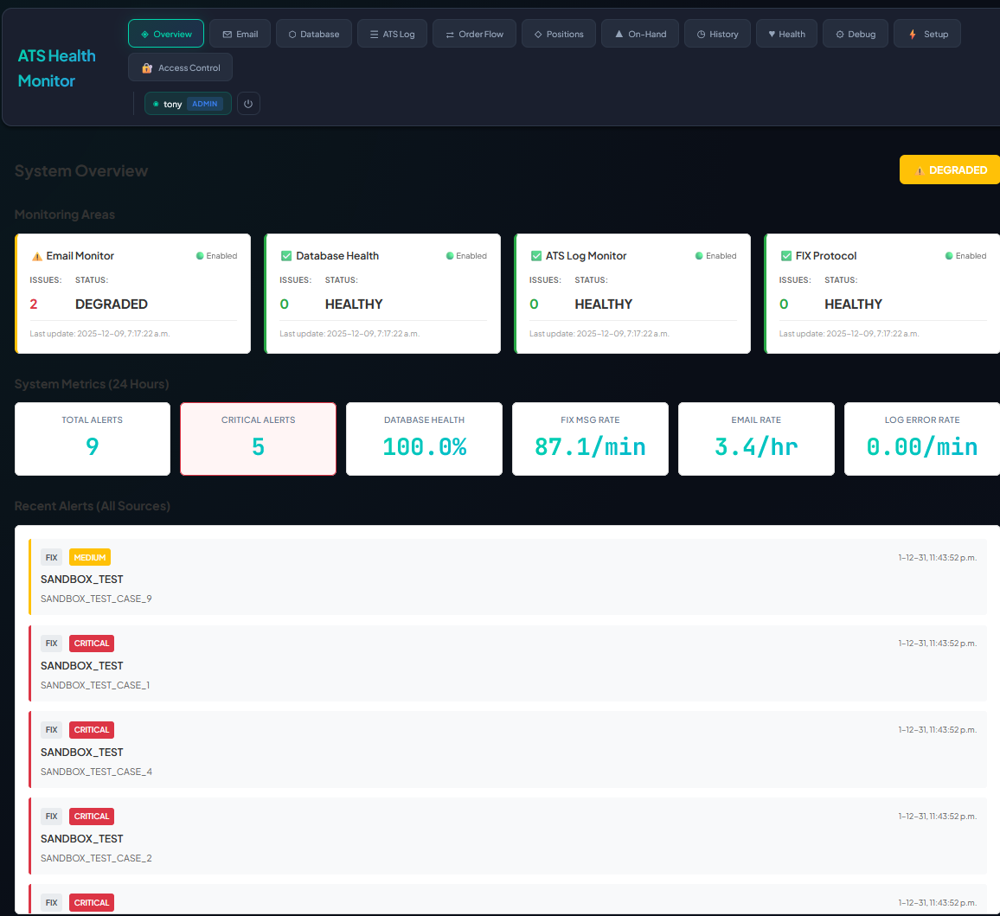
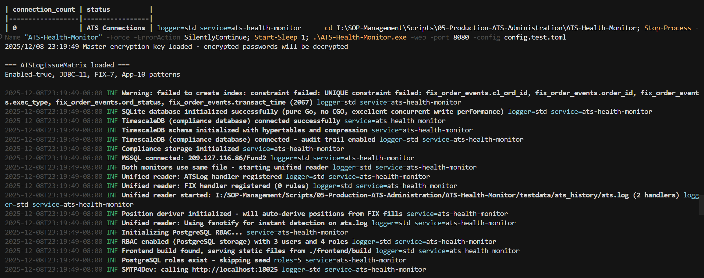

Figure 18: Example Telegram alert notification for critical issue detection
Figure 18: Example Telegram alert notification for critical issue detectionCategory: Trading System Administration - Monitoring Last Updated: 2025-12-17 Author: ATS Production Team Version: 5.9 Review Date: 2026-01-17 Status: Active
This comprehensive guide covers the complete deployment, configuration, operation, testing, and security of the ATS Health Monitor system (Version 5.2). It consolidates all documentation into a single reference, including:
Key Features (V5.3):
| Feature | Description |
|---|---|
| 🏠 System Overview Dashboard | Unified view of all monitoring areas with aggregated alerts |
| 📊 Three Issue Matrices | FIX Protocol, Database Health, and ATS Log detection |
| 🔐 RBAC Authentication | Role-based tab access with session management |
| 📈 IB FIX 4.2 Positions | Complete position fields with decimal precision |
| 🎯 Plane Integration | Automatic issue creation with routing rules |
| 💬 Telegram Integration | Multi-chat routing with email forwarding |
| 🌐 Modern Web Dashboard | React-based UI with Material-UI components |
| ✅ Hong Kong SFC Compliance | All critical issues flagged for regulatory reporting |
| 🗄️ Dual Database Architecture | ChaiSQL (performance) + TimescaleDB (compliance) |
| 📜 Historical Data Stitching | Combine historical positions with live data |
| 🔄 FIX History Sync | Load FIX messages from log files into TimescaleDB |
| 🛡️ Data Loss Prevention | Deduplication, audit logs, file tracking |
 Figure 1: ATS Health Monitor main dashboard showing system status and navigation tabs
fund2)gfprod)| Item | Value |
|---|---|
| SQL Server name | gfprod |
| Database name | fund2 |
| Database credentials | ver2user / atsats |
| SQL Server port | 1433 (default) |
| QuickFixJ log file path | (if using FIX monitoring) |
| Telegram bot token | (from @BotFather) |
| Telegram chat ID | (user ID or group ID) |
| TimescaleDB host | localhost (default) |
| TimescaleDB port | 5432 (default) |
| TimescaleDB database | timeseries_data |
| TimescaleDB credentials | (your PostgreSQL credentials) |
| ATS history folder | (path to rotated log files) |
cd I:\SOP-Management\Scripts\05-Production-ATS-Administration\ATS-Health-Monitor
# Use the unified build script (recommended)
.\build.ps1 -Install -Backend -Frontend
# Or build manually
go mod tidy
go build -o ATS-Health-Monitor.exe .
cd frontend
npm install
npm run build
cd ..
Expected Result:
- ATS-Health-Monitor.exe created (5-10 MB)
- Frontend built at frontend/build/
- No compilation errors
Copy-Item config.toml.example config.toml
.\scripts\tools\Validate-Config.ps1
# Web Dashboard Mode (recommended)
.\ATS-Health-Monitor.exe -web -port 8080 -config config.toml
# Console Mode (for debugging)
.\ATS-Health-Monitor.exe -config config.toml
 Figure 2: Console output showing successful startup with database connection and web server initialization
⚠️ IMPORTANT (Version 1.1+): PostgreSQL is the Source of Truth
| Component | Purpose | When Used |
|---|---|---|
PostgreSQL (system_config table) |
Runtime configuration - All settings loaded from here | Every startup, survives restarts |
TOML File (config.toml) |
Backup, import/export, initial seed | First startup of new database, manual import |
What This Means:
- ✅ Configuration changes via Setup tab GUI are saved to PostgreSQL
- ✅ PostgreSQL config persists across container restarts (named volume)
- ❌ Editing config.toml in production has no effect unless imported via GUI
- 📤 Use Export button to backup current PostgreSQL config to TOML
- 📥 Use Import button to restore TOML config to PostgreSQL
File Locations:
- Default Location: config.toml in the ATS Health Monitor installation directory
- Example File: config.toml.example
- Validation Script: scripts/tools/Validate-Config.ps1
- Production Deployment: See Production Deployment Guide
Section: [database]
[database]
server = "gfprod"
port = 1433
database = "fund2"
username = "ver2user"
password = "your_secure_password"
Tips: - ✅ Use strong passwords (avoid defaults) - ✅ Test connection before enabling monitoring - ❌ Don't use default passwords in production
Section: [monitor]
[monitor]
check_interval_seconds = 300 # 5 minutes (recommended)
idle_threshold_minutes = 5
min_ats_connections = 1
max_ats_connections = 100
enable_console = true
Interval Guidelines: - Production: 300 seconds (5 minutes) - Development: 60 seconds (1 minute) - High-load systems: 600 seconds (10 minutes)
Section: [[custom_queries]]
Key Principle: Empty results = good, rows returned = issue detected
[[custom_queries]]
name = "Check SQL Server Configuration"
description = "Monitor SQL Server configuration settings"
query = """
SELECT name, value_in_use, [description]
FROM sys.configurations
WHERE name IN ('remote query timeout', 'remote login timeout')
AND value_in_use = 0
"""
severity = "WARNING"
enabled = true
Section: [telegram]
[telegram]
enabled = true
token = "123456789:ABCdefGHIjklMNOpqrsTUVwxyz"
chat_id = "123456789"
show_on_dashboard = true
Getting Bot Token:
1. Message @BotFather on Telegram
2. Send /newbot command
3. Copy the token provided
Getting Chat ID: - Message @userinfobot for personal chat ID - Add @userinfobot to group for group ID
Figure 18: Example Telegram alert notification for critical issue detection
Section: [dashboard]
[dashboard]
health_refresh_interval_ms = 30000
trading_refresh_interval_ms = 5000
data_refresh_interval_ms = 30000
trigger_check_delay_ms = 2000
recent_issues_limit = 20
issues_list_limit = 50
metrics_chart_limit = 100
main_grid_layout = "2fr 1fr"
summary_cards_per_row = 4
auto_refresh_enabled = true
Section: [trading_dashboard]
The Positions dashboard displays trading positions from IB/Trading System in read-only mode. It uses IB FIX 4.2 PositionReport (MsgType=AP) fields.
[trading_dashboard]
enabled = true
auto_refresh_enabled = true
refresh_interval_ms = 5000
show_underlying_type = true
show_ask_quan = true
show_ask_price = true
show_filled_quan = true
show_filled_price = true
show_stp_price = true
show_stp_quan = true
show_exit_price = true
show_exit_quan = true
See Section 5: IB FIX 4.2 Position Fields for detailed field mapping.
Section: [fix_monitor]
[fix_monitor]
enabled = true
log_file = "C:\\Apps\\QuickFixJ\\logs\\FIX.4.2-gamlfix001-IB.messages.log"
session_id = "FIX.4.2-gamlfix001-IB"
sender_comp_id = "gamlfix001"
target_comp_id = "IB"
follow = true
poll_interval_seconds = 5
[fix_monitor.order_aggregation]
enabled = true
store_raw = false
[fix_monitor.issue_matrix]
enabled = true
price_slippage_threshold = 0.2
latency_threshold_ms = 1000
duplicate_window_seconds = 900
ghost_new_timeout_seconds = 30
pending_cancel_timeout_seconds = 10
orphan_no_ack_timeout_seconds = 5
FIX Issue Matrix Scenarios (9 Required):
| # | Reason Code | Severity | Description |
|---|---|---|---|
| 1 | REJECTION_99 |
Critical | Order rejection with reject code 99 |
| 2 | GHOST_ORDER |
Critical | Execution report missing OrderID |
| 3 | ORPHAN_ORDER |
High | Partially filled with remaining qty |
| 4 | OVERFILL |
Critical | Cumulative qty exceeds order qty |
| 5 | PRICE_SLIPPAGE |
Medium | Execution price differs from order |
| 6 | LATENCY_BREACH |
Medium | Transaction time vs capture time |
| 7 | ORPHAN_NO_ACK |
Critical | New order sent, no acknowledgment |
| 8 | GHOST_STALLED_NEW |
High | Order stuck in NEW state |
| 9 | PENDING_CANCEL_TIMEOUT |
High | Cancel request pending too long |
Section: [database_issue_matrix]
[database_issue_matrix]
enabled = true
connection_pool_threshold = 0.8
connection_timeout_ms = 5000
slow_query_threshold_ms = 5000
cpu_threshold_percent = 80.0
memory_threshold_percent = 80.0
log_space_threshold_percent = 90.0
duplicate_window_seconds = 300
Section: [ats_log_issue_matrix]
The ATS Log Issue Matrix provides comprehensive pattern-based detection of errors in ATS log files.
[ats_log_issue_matrix]
enabled = true
duplicate_window_seconds = 300
These patterns detect ATS startup and shutdown events:
| Reason Code | Severity | Pattern | Description |
|---|---|---|---|
ATS_STARTED |
Info | ATS started |
ATS application started (includes DEBUG mode) |
ATS_SHUTDOWN |
Warning | ATS shutdown |
ATS application shutdown |
ATS_ERROR |
High | ERROR ATS - (excluding started/shutdown) |
Generic ATS errors |
# ATS Lifecycle Events
[[ats_log_issue_matrix.application_error_patterns]]
name = "ATS Started"
pattern = "ATS started"
reason_code = "ATS_STARTED"
severity = "info"
category = "application"
[[ats_log_issue_matrix.application_error_patterns]]
name = "ATS Shutdown"
pattern = "ATS shutdown"
reason_code = "ATS_SHUTDOWN"
severity = "warning"
category = "application"
# Generic ATS Error (excludes started/shutdown)
[[ats_log_issue_matrix.application_error_patterns]]
name = "ATS Error"
pattern = "ERROR ATS -(?!.*ATS started)(?!.*ATS shutdown)"
reason_code = "ATS_ERROR"
severity = "high"
category = "application"
Comprehensive database error detection:
| Reason Code | Severity | Detects |
|---|---|---|
JDBC_TIMEOUT |
Critical | Connection timeout, query timeout |
JDBC_CONNECTION_REFUSED |
Critical | Connection refused, unable to connect |
JDBC_CONNECTION_CLOSED |
Critical | Connection lost, reset, broken pipe |
JDBC_POOL_EXHAUSTED |
Critical | Pool exhausted, no available connections |
JDBC_SYNTAX_ERROR |
High | SQL syntax errors, malformed queries |
JDBC_QUERY_FAILED |
High | Query/statement execution failures |
JDBC_DEADLOCK |
Critical | Deadlock detected, lock timeout |
JDBC_ROLLBACK |
High | Transaction rollback |
JDBC_CONSTRAINT_VIOLATION |
High | Duplicate key, foreign key violations |
JDBC_DATA_TRUNCATION |
Warning | Data too long, value too large |
JDBC_AUTH_FAILED |
Critical | Login failed, access denied |
# JDBC Connection Errors
[[ats_log_issue_matrix.jdbc_error_patterns]]
name = "JDBC Connection Timeout"
pattern = "(?i)(java\\.sql\\.SQLException.*timeout|connection.*timed?\\s*out)"
reason_code = "JDBC_TIMEOUT"
severity = "critical"
category = "jdbc"
[[ats_log_issue_matrix.jdbc_error_patterns]]
name = "JDBC Connection Refused"
pattern = "(?i)(connection refused|connect.*refused|unable to connect)"
reason_code = "JDBC_CONNECTION_REFUSED"
severity = "critical"
category = "jdbc"
[[ats_log_issue_matrix.jdbc_error_patterns]]
name = "JDBC Connection Closed"
pattern = "(?i)(connection.*closed|connection.*lost|connection.*reset|broken pipe)"
reason_code = "JDBC_CONNECTION_CLOSED"
severity = "critical"
category = "jdbc"
# JDBC Query Errors
[[ats_log_issue_matrix.jdbc_error_patterns]]
name = "SQL Query Failed"
pattern = "(?i)(query.*failed|execute.*failed|statement.*failed|sql.*exception)"
reason_code = "JDBC_QUERY_FAILED"
severity = "high"
category = "jdbc"
[[ats_log_issue_matrix.jdbc_error_patterns]]
name = "SQL Deadlock"
pattern = "(?i)(deadlock|lock.*timeout|waiting for lock)"
reason_code = "JDBC_DEADLOCK"
severity = "critical"
category = "jdbc"
Trading session and heartbeat monitoring:
| Reason Code | Severity | Detects |
|---|---|---|
FIX_DISCONNECT |
Critical | Session disconnect, socket closed |
FIX_LOGON_FAILED |
Critical | Logon failed, authentication rejected |
FIX_HEARTBEAT_TIMEOUT |
Warning | Heartbeat missed, no heartbeat |
FIX_HEARTBEAT_ERROR |
High | Heartbeat error, test request timeout |
FIX_SEQUENCE_GAP |
Warning | Message sequence gap, resend request |
FIX_MESSAGE_REJECTED |
High | Order/message rejected |
FIX_SESSION_ERROR |
High | Protocol/session errors |
[[ats_log_issue_matrix.fix_error_patterns]]
name = "FIX Session Disconnect"
pattern = "(?i)(FIX.*disconnect|session.*disconnect|socket.*closed)"
reason_code = "FIX_DISCONNECT"
severity = "critical"
category = "fix"
[[ats_log_issue_matrix.fix_error_patterns]]
name = "FIX Heartbeat Timeout"
pattern = "(?i)(heartbeat.*timeout|heartbeat.*missed|no.*heartbeat)"
reason_code = "FIX_HEARTBEAT_TIMEOUT"
severity = "warning"
category = "fix"
[[ats_log_issue_matrix.fix_error_patterns]]
name = "FIX Heartbeat Error"
pattern = "(?i)(heartbeat.*error|heartbeat.*fail|test.*request.*timeout)"
reason_code = "FIX_HEARTBEAT_ERROR"
severity = "high"
category = "fix"
Network connectivity monitoring:
| Reason Code | Severity | Detects |
|---|---|---|
NETWORK_TIMEOUT |
High | Socket timeout, read/write timeout |
NETWORK_UNREACHABLE |
Critical | Network/host unreachable |
DNS_FAILED |
Critical | DNS resolution failure |
SSL_ERROR |
Critical | TLS/SSL certificate errors |
[[ats_log_issue_matrix.application_error_patterns]]
name = "Network Timeout"
pattern = "(?i)(network.*timeout|socket.*timeout|read.*timeout|write.*timeout)"
reason_code = "NETWORK_TIMEOUT"
severity = "high"
category = "network"
[[ats_log_issue_matrix.application_error_patterns]]
name = "SSL/TLS Error"
pattern = "(?i)(ssl.*error|tls.*error|certificate.*error|handshake.*failed)"
reason_code = "SSL_ERROR"
severity = "critical"
category = "network"
Section: [smtp4dev]
[smtp4dev]
enabled = true
url = "http://localhost:5000"
poll_interval_seconds = 30
delete_after_forward = false
[[smtp4dev.recipient_routes]]
name = "Position Reports"
description = "Route position reports to trading chat"
recipients = ["position-reports@ats.local"]
telegram_chat_id = "-1001234567890"
Section: [position_refresh]
[position_refresh]
enabled = true
query = """
SELECT
symbol as underlying_type,
order_qty as ask_quan,
order_price as ask_price,
filled_qty as filled_quan,
filled_price,
stop_price as stp_price,
stop_qty as stp_quan,
exit_price,
exit_qty as exit_quan
FROM trading_orders
WHERE status = 'ACTIVE'
"""
refresh_interval_seconds = 30
Section: [timezone]
[timezone]
default_timezone = "America/New_York"
[timezone.markets]
NYSE = "America/New_York"
NASDAQ = "America/New_York"
CME = "America/Chicago"
HKEX = "Asia/Hong_Kong"
[timezone.aliases]
EST = "America/New_York"
HKT = "Asia/Hong_Kong"
UTC = "UTC"
Section: [api_auth]
[api_auth]
enabled = true
require_auth = true
rate_limit_rps = 100
allowed_origins = ["https://dashboard.example.com", "http://localhost:3000"]
[[api_auth.api_keys]]
name = "Dashboard"
key = "your_secure_api_key_dashboard_12345"
permissions = ["read"]
enabled = true
[[api_auth.api_keys]]
name = "Admin"
key = "your_secure_api_key_admin_67890"
permissions = ["read", "write", "admin"]
enabled = true
Section: [rbac] (NEW in V5.2)
Role-Based Access Control provides tab-level permissions and user authentication.
[rbac]
enabled = true
default_role = "viewer"
session_timeout_minutes = 480
auth_method = "basic"
# Role Definitions
[rbac.roles.admin]
description = "Full administrative access"
permissions = ["*"]
[rbac.roles.operator]
description = "Operations team - read and execute"
permissions = [
"tab:overview", "tab:pro", "tab:email", "tab:database",
"tab:atslog", "tab:fix", "tab:positions", "tab:stp_orders",
"tab:history", "tab:health",
"action:trigger_check", "action:refresh_positions",
"api:read"
]
[rbac.roles.analyst]
description = "Read-only access for analysis"
permissions = [
"tab:overview", "tab:pro", "tab:database", "tab:atslog",
"tab:fix", "tab:positions", "tab:stp_orders", "tab:history",
"api:read"
]
[rbac.roles.viewer]
description = "Limited read-only access"
permissions = [
"tab:overview", "tab:fix", "tab:positions", "tab:history",
"api:read"
]
# User Accounts
[[rbac.users]]
username = "admin"
password_hash = "$2a$10$..." # Use hashpassword.go to generate
roles = ["admin"]
enabled = true
[[rbac.users]]
username = "operator"
password_hash = "$2a$10$..."
roles = ["operator"]
enabled = true
Generating Password Hashes:
cd Scripts\05-Production-ATS-Administration\ATS-Health-Monitor
go run scripts/hashpassword.go YourSecurePassword123
See Section 6: RBAC for detailed documentation.
Section: [plane]
[plane]
enabled = true
base_url = "https://plane.example.com"
api_token = "your_plane_api_key"
workspace_slug = "ats-monitoring"
project_id = "ats-health-monitor"
auto_create = true
[[plane.routes]]
name = "Critical Issues"
match_reason_codes = ["REJECTION_99", "GHOST_ORDER", "JDBC_TIMEOUT"]
priority = "urgent"
labels = ["critical", "sfc-reportable"]
ATS Health Monitor supports encrypted passwords for all sensitive fields using AES-256-GCM encryption. This allows you to store database passwords, API tokens, and other secrets securely in the TOML file.
Encryption vs Hashing:
| Type | Use Case | Reversible | Examples |
|---|---|---|---|
| Bcrypt Hash | RBAC user authentication | No | password_hash in [[rbac.users]] |
| AES Encryption | Connection secrets | Yes | password, token, api_token, key |
Encrypted Value Format:
ENC:base64encodedencryptedvalue...
Supported Fields:
| Section | Field | Type |
|---|---|---|
[database] |
password |
Encrypted |
[telegram] |
token |
Encrypted |
[plane] |
api_token |
Encrypted |
[[api_auth.api_keys]] |
key |
Encrypted |
[[rbac.users]] |
password_hash |
Bcrypt Hash |
Step 1: Generate a Master Key
cd Scripts\05-Production-ATS-Administration\ATS-Health-Monitor
go run scripts/hashpassword.go generate-key
Output:
=== NEW MASTER ENCRYPTION KEY ===
Key: YWJjZGVmZ2hpamtsbW5vcHFyc3R1dnd4eXoxMjM0NTY=
Option 1 - Environment variable (recommended for production):
set ATS_MONITOR_MASTER_KEY=YWJjZGVmZ2hpamtsbW5vcHFyc3R1dnd4eXoxMjM0NTY=
Option 2 - Key file (for development):
echo YWJjZGVmZ2hpamtsbW5vcHFyc3R1dnd4eXoxMjM0NTY= > master.key
Step 2: Set the Master Key
# Option 1: Environment variable (recommended)
$env:ATS_MONITOR_MASTER_KEY = "YourMasterKeyHere"
# Option 2: Key file (development only)
echo "YourMasterKeyHere" > master.key
Step 3: Encrypt a Password
# Encrypt database password
go run scripts/hashpassword.go encrypt atsats
# Output:
# Encrypted: ENC:base64value...
Step 4: Use in config.toml
[database]
server = "gfprod"
port = 1433
database = "fund2"
username = "ver2user"
password = "ENC:ABC123def456..." # Encrypted password
[telegram]
enabled = true
token = "ENC:XYZ789..." # Encrypted bot token
chat_id = "123456789"
[plane]
enabled = true
api_token = "ENC:QRS456..." # Encrypted API token
Verify Encryption:
# Decrypt to verify
go run scripts/hashpassword.go decrypt "ENC:ABC123def456..."
Security Best Practices:
master.key to version controlBackwards Compatibility:
Plain text passwords still work. The system automatically detects encrypted values by the ENC: prefix:
# Both formats work:
password = "plaintext_password" # Plain text (development)
password = "ENC:encryptedvalue..." # Encrypted (production)
ATS Health Monitor uses a dual database architecture for optimal performance and SFC compliance:
| Database | Purpose | Data Type | Retention |
|---|---|---|---|
| ChaiSQL | Operational/Performance | Live FIX messages, current positions | Session-based (resets with ATS) |
| TimescaleDB | Compliance/Audit | Complete FIX history, audit trail | Permanent (SFC requirement) |
Configuration:
[database.operational]
enabled = true
path = "C:/ATS/monitor/operational.db"
[database.compliance]
enabled = true
host = "localhost"
port = 5432
database = "timeseries_data"
username = "timescale_user"
password_hash = "ENC:encrypted_password..." # Or plain text
ssl_mode = "disable"
max_connections = 10
min_connections = 2
retention_days = 365 # SFC requires 7 years for audit
write_queue_size = 1000
retry_on_failure = true
Key Features:
Why Two Databases?
The Positions dashboard supports stitching historical data from TimescaleDB with current live positions. This allows traders to see a complete picture of positions that span multiple ATS sessions.
How It Works:
API Endpoints:
GET /api/v1/trading/positions/historical?days=30 - Load historical positions
POST /api/v1/atslog/history/sync-fix - Sync FIX history from log files
GET /api/v1/atslog/history/sync-log - Get sync audit log
Dashboard Usage:
ATS Health Monitor uses different log source strategies for Development and Production environments:
| Environment | Live ATS.log | ats_history | Purpose |
|---|---|---|---|
| Dev | ❌ No | ✅ Yes | Test with historical data only |
| Production | ✅ Yes | ✅ Yes | Real-time + historical analysis |
config.test.toml)In development, there's no live ATS running, so we use only the ats_history folder:
# ==============================================================================
# SECTION 8: LOG FILE MONITORING (DEV MODE)
# ==============================================================================
[log_monitor]
enabled = true
log_file = "testdata/ats_history" # Historical folder only
history_folder = "testdata/ats_history"
follow = false # Don't tail (static files)
# ==============================================================================
# SECTION 11: FIX PROTOCOL MONITORING (DEV MODE)
# ==============================================================================
[fix_monitor]
enabled = true
log_file = "testdata/ats_history" # Historical folder
follow = false # Don't tail
scan_existing = true # Load all historical files on startup
config.toml)In production, monitor the live ATS.log AND process historical files:
# ==============================================================================
# SECTION 8: LOG FILE MONITORING (PRODUCTION MODE)
# ==============================================================================
[log_monitor]
enabled = true
log_file = "C:\\ATS\\ats900\\run\\ats.log" # Live log file
history_folder = "C:\\ATS\\ats900\\run\\atslog" # Rotated logs
follow = true # Continuously tail
# ==============================================================================
# SECTION 11: FIX PROTOCOL MONITORING (PRODUCTION MODE)
# ==============================================================================
[fix_monitor]
enabled = true
log_file = "C:\\ATS\\ats900\\run\\ats.log" # Live log file
follow = true # Continuously tail
scan_existing = false # Don't slow startup
Why This Architecture?
ats_history provides consistent test data.ATS.log, while history_folder provides access to rotated logs for compliance queries.@FIX@ marker and are preserved across ATS restarts (unlike FIX.messages.log which gets wiped).The Resync Manager provides on-demand historical log import from ATS log files into the ATS Health Monitor. This is essential for: - Populating FIX Order History for trades that occurred before live monitoring started - Backfilling data after a new deployment - Importing specific date ranges for investigation
flowchart TB
subgraph NY2["NY2 Windows VM (192.168.168.2)"]
RM[resync-manager.exe<br/>API: 8090<br/>ZMQ: 9001-9010]
ATS_LOG[ats.log<br/>Current Day]
HIST[ats_history/<br/>*.log.gz<br/>Historical]
end
subgraph UBUNTU["Ubuntu VM (192.168.168.100)"]
DOCKER[ATS-Health-Monitor<br/>Docker Container]
TSDB[(TimescaleDB<br/>fix_messages)]
end
RM -->|"Read"| ATS_LOG
RM -->|"Read + Decompress"| HIST
RM -->|"ZMQ PUB<br/>Port 9001-9010"| DOCKER
DOCKER -->|"Store FIX"| TSDB
style NY2 fill:#1e3a5f,stroke:#3b82f6,color:#fff
style UBUNTU fill:#1e3a5f,stroke:#10b981,color:#fff
style RM fill:#3b82f6,stroke:#60a5fa,color:#fff
style DOCKER fill:#10b981,stroke:#34d399,color:#fff
Location: cmd/resync-manager/config.toml (on NY2)
# =============================================================================
# RESYNC MANAGER CONFIGURATION - Runs on NY2 (where ATS logs are)
# =============================================================================
[resync_manager]
# API port for web interface and REST API
api_port = 8090
# Directory containing historical log files
log_dir = "C:\\ATS\\ats900\\run\\atslog"
# Temporary directory for decompressed files
temp_dir = "C:\\Temp\\resync"
[log_file]
# Path to current (live) ats.log
path = "C:\\ATS\\ats900\\run\\ats.log"
# =============================================================================
# HTTP TRANSFER - Files served via HTTP API (v1.1+)
# =============================================================================
# Files are downloaded directly from HTTP endpoint: /api/download/{filepath}
# No FTP server needed. ZeroMQ removed in favor of HTTP direct download.
Location: config.production.toml (on Ubuntu VM)
# =============================================================================
# RESYNC CLIENT - Connects to Resync Manager on NY2
# =============================================================================
[resync]
enabled = true
# Resync Manager API URL (NY2 via port forwarding or direct)
manager_url = "http://192.168.168.2:8090"
# HTTP mode is always enabled (FTP mode removed in v1.1)
# Files are downloaded directly from HTTP API endpoints
Step 1: Deploy Resync Manager on NY2
# On NY2 Windows VM
cd I:\SOP-Management\Scripts\05-Production-ATS-Administration\ATS-Health-Monitor\cmd\resync-manager
# Build the resync manager
go build -o resync-manager.exe .
# Create config file
Copy-Item config.toml.example config.toml
# Edit paths in config.toml
notepad config.toml
# Run as a scheduled task or Windows service
.\resync-manager.exe -config config.toml -port 8090
Step 2: Configure Port Forwarding (if needed)
If NY2 and Ubuntu VM are on different networks:
# On NY2: Forward API and ZMQ ports
netsh interface portproxy add v4tov4 listenport=8090 listenaddress=0.0.0.0 connectport=8090 connectaddress=192.168.168.2
netsh interface portproxy add v4tov4 listenport=9001 listenaddress=0.0.0.0 connectport=9001 connectaddress=192.168.168.2
# ... repeat for 9002-9010
Step 3: Update Docker Compose (Ubuntu VM)
# docker-compose.yml
services:
ats-health-monitor:
image: ats-health-monitor:test
volumes:
- ./config:/app/config
- ats-data:/app/data
environment:
- RESYNC_MANAGER_URL=http://192.168.168.2:8090
The Resync Manager panel is in the ATS Log Issue Matrix tab:
| Scenario | Mode | Date Range | Result |
|---|---|---|---|
| FIX History empty for today | Current | N/A | Imports ~8,000 lines in 5-10 sec |
| Missing data from last week | Historical | Dec 3-9 | Imports all .log.gz files |
| New deployment backfill | Historical | Oct 1 - Today | Full historical import |
| Specific date investigation | Historical | Dec 5-5 | Single day import |
| Endpoint | Method | Description |
|---|---|---|
/api/v1/resync/status |
GET | Get resync manager status |
/api/v1/resync/files |
GET | List available log files |
/api/v1/resync/start |
POST | Start a resync session |
/api/v1/resync/cancel |
POST | Cancel active session |
| Issue | Cause | Solution |
|---|---|---|
| "Not configured" | [resync] missing in config.toml |
Add resync section to config |
| "No files available" | Resync Manager not running | Start resync-manager.exe on ATS-VM |
| "Connection failed" | Network issue | Check NY2 port forwarding |
| "Session timeout" | Large file processing | Increase timeout or reduce date range |
The Reliable Log Feed provides guaranteed message delivery for multi-site deployments. Unlike the basic ZeroMQ PUB/SUB (which can drop messages), this system ensures no message loss even during: - Subscriber disconnects or restarts - Network interruptions - High message bursts
Standard ZeroMQ PUB/SUB has a critical limitation:
PROBLEM: Standard PUB/SUB
┌──────────────┐ ┌──────────────┐
│ Publisher │ ──MSG──►│ Subscriber │ ✓ Received
│ │ ──MSG──►│ (offline) │ ✗ LOST!
│ │ ──MSG──►│ (online) │ ✓ Received
└──────────────┘ └──────────────┘
For SFC compliance, every FIX message must be recorded. Lost messages mean: - Missing trade records - Incomplete audit trail - Regulatory violations
The Reliable Log Feed solves this:
SOLUTION: Reliable PUB/SUB
┌──────────────┐ ┌──────────────┐
│ Publisher │ ──MSG──►│ Subscriber │ ✓ Received
│ + WAL │ ──MSG──►│ (offline) │ ✓ Stored in WAL
│ + Sequence │ ──MSG──►│ (online) │ ✓ Received
│ │◄─REPLAY─│ Gap detect │ ✓ REPLAYED!
└──────────────┘ └──────────────┘
flowchart LR
subgraph NY2["NY2 Log Agent (Publisher)"]
TAIL[Log Tailer]
BATCH[Batch + Sequence]
WAL[(WAL<br/>24hr retention)]
PUB[ZMQ PUB<br/>:9000]
ROUTER[ZMQ ROUTER<br/>:9001]
end
subgraph NY_VM["NY Ubuntu VM"]
SUB1[ZMQ SUB]
DEALER1[ZMQ DEALER]
PROC1[Processor]
DB1[(TimescaleDB)]
end
subgraph HK["HK Office"]
SUB2[ZMQ SUB]
DEALER2[ZMQ DEALER]
PROC2[Processor]
DB2[(TimescaleDB)]
end
TAIL -->|"Lines"| BATCH
BATCH -->|"Persist"| WAL
BATCH -->|"Broadcast"| PUB
PUB -->|"tcp://ny2:9000"| SUB1
PUB -->|"tcp://ny2:9000<br/>via VPN"| SUB2
SUB1 -->|"Gap?"| DEALER1
SUB2 -->|"Gap?"| DEALER2
DEALER1 -->|"Replay Req"| ROUTER
DEALER2 -->|"Replay Req"| ROUTER
ROUTER -->|"Replay"| WAL
SUB1 --> PROC1 --> DB1
SUB2 --> PROC2 --> DB2
style NY2 fill:#1e3a5f,stroke:#f59e0b,color:#fff
style NY_VM fill:#1e3a5f,stroke:#10b981,color:#fff
style HK fill:#1e3a5f,stroke:#8b5cf6,color:#fff
| Feature | Description |
|---|---|
| Sequence Numbers | Every batch has a monotonically increasing sequence for gap detection |
| Write-Ahead Log (WAL) | Messages persisted locally before sending (survives agent restart) |
| Gap Detection | Subscribers detect missing sequences automatically |
| Replay Requests | Subscribers request missed messages via ROUTER/DEALER pattern |
| Deduplication | Replays may overlap with live - duplicates are filtered |
| Multi-Site Support | Unlimited subscribers, each tracks its own state |
| State Persistence | Subscribers remember last sequence across restarts |
Location: cmd/log-agent/config.reliable.toml
# =============================================================================
# RELIABLE LOG AGENT - Guaranteed Delivery Publisher
# =============================================================================
# Run on NY2 where ats.log is located
# =============================================================================
[agent]
# ZeroMQ bind addresses (use * to listen on all interfaces)
pub_bind_addr = "*:9000" # PUB socket - broadcasts to all subscribers
replay_bind_addr = "*:9001" # ROUTER socket - handles replay requests
# Hostname included in messages (for debugging multi-agent setups)
hostname = "NY2-ATS"
[log_file]
# ATS log file to watch
path = "C:\\ATS\\ats900\\run\\ats.log"
[buffer]
# Internal buffer settings
size = 50000 # Lines to buffer (NOT drop!) before blocking
batch_size = 100 # Lines per batch for network efficiency
flush_interval_ms = 500 # Max delay before sending incomplete batch
# ZeroMQ High-Water Mark
# Set high to handle bursts without blocking publishers
send_hwm = 100000
[persistence]
# Write-Ahead Log for replay capability
dir = "C:\\ATS\\wal" # WAL file directory
max_wal_size_mb = 100 # Max size per WAL file before rotation
retention_hours = 24 # Hours to keep old messages for replay
# =============================================================================
# EXPLANATION:
# =============================================================================
# 1. Log Tailer reads lines from ats.log
# 2. Lines are batched (100 per batch) and assigned sequence number
# 3. Batch is written to WAL FIRST (persistence)
# 4. Batch is broadcast on PUB socket (all subscribers receive)
# 5. If subscriber misses messages, it sends ReplayRequest to ROUTER
# 6. Agent reads from WAL and sends ReplayResponse
# =============================================================================
Location: config.production.toml (Ubuntu VM, HK Office, etc.)
# =============================================================================
# RELIABLE LOG RECEIVER - Guaranteed Delivery Subscriber
# =============================================================================
# Configure on EACH site that needs ATS log data
# =============================================================================
[reliable_log_receiver]
enabled = true
# UNIQUE subscriber ID - MUST be different for each installation!
# This is used for state persistence and debugging
subscriber_id = "ny-production"
# State persistence directory (survives container restarts)
state_dir = "/app/data"
# Gap detection and replay settings
max_gap_before_replay = 5 # Sequences to wait before requesting replay
replay_timeout_seconds = 30 # Timeout for replay requests
replay_retry_count = 3 # Retries before logging error
gap_check_interval_sec = 5 # How often to scan for gaps
# Processing buffer (handles message bursts)
process_buffer_size = 10000
# =============================================================================
# PUBLISHERS (configure one or more for failover)
# =============================================================================
[[reliable_log_receiver.publishers]]
name = "NY2 Primary"
pub_addr = "192.168.168.2:9000" # ZMQ PUB socket address
replay_addr = "192.168.168.2:9001" # ZMQ ROUTER for replay requests
priority = 1 # Lower = higher priority
# Optional: Backup publisher for failover
# [[reliable_log_receiver.publishers]]
# name = "NY2 Backup"
# pub_addr = "10.2.0.5:9000"
# replay_addr = "10.2.0.5:9001"
# priority = 2
# =============================================================================
# SITE-SPECIFIC EXAMPLES:
# =============================================================================
# NY Ubuntu VM (same network as NY2):
# subscriber_id = "ny-production"
# pub_addr = "192.168.168.2:9000"
#
# HK Office (via WireGuard VPN):
# subscriber_id = "hk-office"
# pub_addr = "10.101.0.5:9000" # NY2 via VPN
#
# Developer Machine (remote debugging):
# subscriber_id = "developer-tony"
# pub_addr = "10.101.0.5:9000" # NY2 via VPN
# =============================================================================
Step 1: Build and Deploy Log Agent on NY2
# On NY2 Windows VM
cd I:\SOP-Management\Scripts\05-Production-ATS-Administration\ATS-Health-Monitor\cmd\log-agent
# Build the reliable log agent
go build -o log-agent.exe .
# Create config file
Copy-Item config.reliable.toml.example config.toml
# Edit paths and verify settings
notepad config.toml
# Create WAL directory
New-Item -ItemType Directory -Force -Path "C:\ATS\wal"
# Run the agent (use Task Scheduler for production)
.\log-agent.exe -config config.toml
Step 2: Configure Firewall Rules on NY2
# Allow ZeroMQ ports
New-NetFirewallRule -DisplayName "ATS Log Agent PUB" -Direction Inbound -Protocol TCP -LocalPort 9000 -Action Allow
New-NetFirewallRule -DisplayName "ATS Log Agent ROUTER" -Direction Inbound -Protocol TCP -LocalPort 9001 -Action Allow
Step 3: Update Ubuntu VM Configuration
# SSH to Ubuntu VM
ssh atsadmin@192.168.168.100
# Edit config.production.toml
nano ~/ats-deploy/config/config.production.toml
# Add/update the reliable_log_receiver section (see 3.23.5)
Step 4: Restart Docker Container
cd ~/ats-deploy
docker compose down ats-health-monitor
docker compose up -d ats-health-monitor
# Verify connection
docker logs ats-health-monitor 2>&1 | grep -i "reliable\|connected\|subscribed"
sequenceDiagram
participant T as Log Tailer
participant A as Agent (NY2)
participant W as WAL
participant S1 as Subscriber (NY)
participant S2 as Subscriber (HK)
Note over T,S2: Normal Operation
T->>A: Line 1, Line 2, Line 3...
A->>W: Write Batch(seq=100)
A->>S1: PUB Batch(seq=100)
A->>S2: PUB Batch(seq=100)
S1-->>S1: Process, store seq=100
S2-->>S2: Process, store seq=100
Note over T,S2: HK Disconnects
T->>A: Line 4, Line 5...
A->>W: Write Batch(seq=101)
A->>S1: PUB Batch(seq=101)
A--xS2: [OFFLINE]
S1-->>S1: Process, store seq=101
A->>W: Write Batch(seq=102)
A->>S1: PUB Batch(seq=102)
A--xS2: [OFFLINE]
Note over T,S2: HK Reconnects
A->>S2: PUB Batch(seq=103)
S2-->>S2: Gap detected! 100→103
S2->>A: ReplayRequest(from=101, to=102)
A->>W: Read seq 101-102
A->>S2: ReplayResponse(batches)
S2-->>S2: Process 101, 102, 103 in order
Check Agent Status:
# On NY2
curl http://localhost:9000/status # (if HTTP status endpoint enabled)
Check Subscriber Status:
# On Ubuntu VM
docker logs ats-health-monitor 2>&1 | grep -E "sequence|gap|replay|connected"
Expected Startup Logs:
INF Reliable log receiver starting subscriber_id=ny-production
INF Connected to publisher name="NY2 Primary" addr=192.168.168.2:9000
INF Restored last sequence from state file seq=12345
INF Subscribed to all topics, waiting for messages...
Gap Detection Logs:
WRN Gap detected! expected=12346 received=12350
INF Requesting replay from=12346 to=12349
INF Replay received batches=4 from=12346 to=12349
INF Gap filled, resuming normal processing
| Issue | Symptom | Solution |
|---|---|---|
| No messages | "Waiting for messages..." forever | Check firewall, verify agent is running |
| Gaps not filling | "Replay timeout" errors | Check ROUTER port (9001) is open |
| Duplicates | Same FIX messages twice | Normal during replay overlap, deduplicated by hash |
| State lost | Sequence resets to 0 | Check state_dir is a persistent volume |
| High latency | Messages delayed | Reduce flush_interval_ms, check network |
flowchart TB
subgraph NY2["NY2 (Publisher)"]
AGENT[log-agent.exe<br/>PUB:9000 ROUTER:9001]
WAL[(WAL Files)]
end
subgraph NY_VM["NY Ubuntu VM"]
direction TB
NY_SUB[reliable_log_receiver]
NY_ID["subscriber_id = 'ny-production'"]
NY_STATE["/app/data/state"]
end
subgraph HK["HK Office"]
direction TB
HK_SUB[reliable_log_receiver]
HK_ID["subscriber_id = 'hk-office'"]
HK_STATE["/opt/ats/data/state"]
end
subgraph DEV["Developer"]
direction TB
DEV_SUB[reliable_log_receiver]
DEV_ID["subscriber_id = 'dev-tony'"]
DEV_STATE["C:\\ATS\\data\\state"]
end
AGENT -->|"Same messages"| NY_SUB
AGENT -->|"Same messages"| HK_SUB
AGENT -->|"Same messages"| DEV_SUB
AGENT --- WAL
style NY2 fill:#f59e0b,stroke:#fbbf24,color:#000
style NY_VM fill:#10b981,stroke:#34d399,color:#fff
style HK fill:#8b5cf6,stroke:#a78bfa,color:#fff
style DEV fill:#3b82f6,stroke:#60a5fa,color:#fff
Key Points:
1. One Publisher (NY2) broadcasts to all subscribers
2. Each subscriber has a unique subscriber_id
3. Each subscriber maintains its own state (last sequence)
4. Gaps are detected and replayed independently per subscriber
5. All sites receive the complete, identical data set
FIX messages from historical log files (e.g., ats_history folder) can be synced to TimescaleDB for audit compliance.
Configuration:
[log_monitor]
# History folder for rotated log files
history_folder = "C:/ATS/logs/ats_history"
Sync Process:
history_folder for log files (e.g., ats - 12042025.log)Triggering Sync:
POST /api/v1/atslog/history/sync-fixSync Audit Log:
Each sync operation records: - Source file name and modification time - Messages found, inserted, skipped - Errors and status - Timestamp
Example Sync Log:
| Time | File | Found | Inserted | Skipped | Status |
|---|---|---|---|---|---|
| 2025-12-06 08:49:03 | ats - 12042025.log | 461 | 0 | 461 | completed |
| 2025-12-06 08:49:02 | ats -12052025.log | 0 | 0 | 0 | completed |
The system implements multiple layers of protection to prevent data loss:
1. Message Deduplication:
message_hash column)(time, cl_ord_id, order_id, msg_type, exec_type)ON CONFLICT DO NOTHING prevents duplicate inserts2. File-Level Tracking:
fix_sync_log table tracks which files have been syncedfile_mod_time to detect if a file has been modified3. Graceful Error Handling:
message_hash fallback4. Audit Trail:
Every sync operation is logged with:
CREATE TABLE fix_sync_log (
id BIGSERIAL PRIMARY KEY,
sync_time TIMESTAMPTZ NOT NULL DEFAULT NOW(),
source_file TEXT NOT NULL,
file_size BIGINT,
file_mod_time TIMESTAMPTZ,
messages_found INT DEFAULT 0,
messages_inserted INT DEFAULT 0,
messages_skipped INT DEFAULT 0,
errors INT DEFAULT 0,
status TEXT DEFAULT 'completed',
error_message TEXT,
UNIQUE(source_file, file_mod_time)
);
Testing Data Loss Prevention:
# Run unit tests for history sync functions
go test -v -run "History|Hash|Timestamp" ./...
The order aggregation system parses FIX 4.2 messages, builds hierarchical order relationships, calculates STP scores, and detects ghost orders.
Core Identification Tags:
| Tag | Field Name | Purpose |
|---|---|---|
| 11 | ClOrdID | Client Order ID (unique client identifier) |
| 37 | OrderID | Broker Order ID (unique broker identifier) |
| 41 | OrigClOrdID | Original ClOrdID (links to parent) |
| 17 | ExecID | Execution ID (unique per fill) |
Order Status Tags:
| Tag | Field Name | Values |
|---|---|---|
| 39 | OrdStatus | 0=New, 1=Partially Filled, 2=Filled, 4=Cancelled, 6=Pending Cancel, 8=Rejected |
| 150 | ExecType | F=Fill, 2=Trade, 4=Cancelled, 8=Rejected |
Core Tables:
| Table | Purpose |
|---|---|
fix_order_links |
Order relationship graph with STP scores |
fix_order_events |
Append-only timeline of all FIX message events |
order_parent_groups |
Summary table with one row per root order |
order_child_orders |
Summary table with one row per ClOrdID |
order_executions |
Individual execution records (fills) |
Formula:
STP Score = (Speed Factor × 0.4) + (Automation Factor × 0.4) + (Consistency Factor × 0.2)
Speed Factor: Based on time from first NEW to first fill - < 0.1 seconds: 100 - > 10 seconds: 0
Automation Factor: - 100 if no Cancel/Replace messages - 0 if any manual intervention
Consistency Factor: Based on price spread across fills - Spread ≤ 0.02: 100 - Spread ≤ 0.05: 80 - Spread ≤ 0.1: 60 - Spread > 0.1: 40
STP Qualification: Score ≥ 80
| Type | Condition | Timeout |
|---|---|---|
| Ghost Stalled NEW | Order in NEW/PENDING_NEW with no update | 30 seconds |
| Pending Cancel Timeout | PENDING_CANCEL with no acknowledgment | 10 seconds |
| Orphan No ACK | New Order sent, no response | 5 seconds |
The Round Trips Dashboard provides authoritative P&L tracking using MSSQL as the source of truth, with drill-down capability to view underlying FIX messages.
This is the most important concept for ATS round trip linking!
┌──────────────────────────────────────────────────────────────────────────┐
│ KEY CONSTRAINT: For any given (BrokerAccountID, StrategyID) pair, │
│ there can be ONLY ONE active position at any moment in time. │
│ │
│ This means ALL orders during a position's lifecycle belong to the │
│ SAME round trip! │
└──────────────────────────────────────────────────────────────────────────┘
Why This Matters:
- MultiCharts can only have ONE active position per (BrokerAccountID, StrategyID) pair
- All orders (Entry, STP modifications, Exit) share this compound key
- This is the authoritative linking mechanism - more reliable than FIX ClOrdID patterns
To protect production MSSQL during trading hours, the Round Trips Dashboard uses a cached architecture:
| Component | Description |
|---|---|
| PostgreSQL Cache | mssql_round_trips table stores synced data |
| Trading Hours Block | Sync disabled 9:30 AM - 4:00 PM EST |
| Admin-Only Sync | Manual sync requires admin role |
| EOD Auto-Sync | Automatic sync after market close |
MSSQL (Production) PostgreSQL (Cache) Dashboard
┌─────────────────┐ ┌────────────────┐ ┌──────────┐
│ fnd.vMegaStock │ ──EOD─► │ mssql_round │ ──Live─► │ Positions│
│ RoundTripLv1 │ Sync │ _trips │ Read │ Tab │
└─────────────────┘ └────────────────┘ └──────────┘
Clicking a round trip row opens a drill-down modal showing:
BrokerAccountID + StrategyID:Sorted by DateTime (oldest first)
FIX Order History - Raw FIX message events grouped by Order ID:
Export round trips to CSV or JSON with RBAC protection:
| Permission | Roles |
|---|---|
export:daily |
operator, analyst, developer, admin |
Filter Options: - Date range (Start/End date pickers) - Quick presets: Today, Yesterday, Last 7 Days, Last 30 Days - Symbol filter (dropdown)
The authoritative query for retrieving all orders in a round trip:
WITH EntryOrder AS (
SELECT
BrokerAccountID,
StrategyID,
SymbolID,
BaseMSTime AS EntryTime,
ATSStockOrderID AS EntryOrderID
FROM fnd.ATSStockOrder (NOLOCK)
WHERE tag37 = @entryTag37
)
SELECT
a.ATSStockOrderID,
a.tag37,
a.OrderName,
a.OrderType,
a.Quantity,
a.Price,
a.Status,
dbo.GetOrderStatusName(a.Status) AS StatusName,
a.BaseMSTime,
a.BuySellType,
dbo.GetBuySellTypeName(a.BuySellType) AS BuySellName
FROM fnd.ATSStockOrder a (NOLOCK)
JOIN EntryOrder e
ON a.BrokerAccountID = e.BrokerAccountID
AND a.StrategyID = e.StrategyID
AND a.SymbolID = e.SymbolID
AND a.BaseMSTime >= e.EntryTime
ORDER BY a.BaseMSTime ASC;
The Positions dashboard displays data from IB FIX 4.2 PositionReport (MsgType=AP) messages.
| FIX Tag | Field Name | Description | Database Column |
|---|---|---|---|
| 55 | Symbol | Ticker symbol (e.g., AAPL) | symbol |
| 48 | SecurityID | Unique identifier (ISIN, CUSIP) | security_id |
| 22 | SecurityIDSource | Source of ID (4=ISIN, 1=CUSIP) | security_id_source |
| 54 | Side | 1=Buy/Long, 2=Sell/Short | side |
| 15 | Currency | Position currency (e.g., USD) | currency |
| FIX Tag | Field Name | Description | Database Column |
|---|---|---|---|
| 703 | PosType | DEL=Delivered (actual holdings) | pos_type |
| 32 | LastQty | Position quantity | pos_qty |
| 14 | CumQty | Cumulative quantity | pos_qty |
| 6 | AvgPx | Average price paid/received | avg_px |
| 31 | LastPx | Last traded/valuation price | last_px |
| PosAmtType | Description | Database Column | Customer Question |
|---|---|---|---|
| CASH | Total Cost Basis | pos_amt_cash |
"What did I pay?" |
| FMTM | Final Mark-to-Market | pos_amt_fmtm |
"What is it worth now?" |
| UNRL | Unrealized P&L | pos_amt_unrl |
"Am I up or down?" |
The system uses shopspring/decimal library for accurate financial calculations. FIX protocol requires 6 decimal places.
Precision Rules:
- FIX Output: 6 decimal places (e.g., 155.250000)
- Display Output: 2 decimal places (e.g., $155.25)
- Internal Calculations: Full precision maintained
Total Position Cost:
Total Position Cost = Quantity × Average Price
= Tag 32 × Tag 6
= 100 × 155.250000
= 15525.000000
Or from IB: Tag 730 where Tag 707 = "CASH"
Market Value:
Market Value = Quantity × Last Price
= Tag 32 × Tag 31
= 100 × 167.000000
= 16700.000000
Or from IB: Tag 730 where Tag 707 = "FMTM"
Unrealized P&L:
Unrealized P&L = Market Value - Cost Basis
= 16700.000000 - 15525.000000
= 1175.000000
Or from IB: Tag 730 where Tag 707 = "UNRL"
P&L Percentage:
P&L % = (Unrealized P&L / Cost Basis) × 100
= (1175.00 / 15525.00) × 100
= 7.57%
8=FIX.4.2|35=AP|55=AAPL|48=US0378331005|22=4|54=1|15=USD|
703=DEL|32=100|6=155.250000|31=167.000000|
707=CASH|730=15525.000000|
707=FMTM|730=16700.000000|
707=UNRL|730=1175.000000|
Interpretation: - Symbol: AAPL (100 shares, LONG) - Average Price: $155.25 - Last Price: $167.00 - Cost Basis: $15,525.00 - Market Value: $16,700.00 - Unrealized P&L: +$1,175.00
RBAC provides tab-level permissions and user authentication for the dashboard.
Permission Types:
- tab:<tab_id> - Access to specific dashboard tab
- action:<action_name> - Execute specific actions
- api:read / api:write - API access levels
- * - Wildcard (all permissions)
Available Tab Permissions:
- tab:overview - System Overview
- tab:pro - Pro Dashboard
- tab:email - Email Monitor
- tab:database - Database Monitor
- tab:atslog - ATS Log Monitor
- tab:fix - FIX Protocol Monitor
- tab:positions - Trading Positions
- tab:stp_orders - STP Orders
- tab:history - Order History
- tab:health - System Health
- tab:debug - Debug Dashboard
- tab:setup - Setup/Configuration
| Role | Description | Permissions |
|---|---|---|
admin |
Full access | * (all) |
operator |
Operations team | Most tabs + trigger actions |
analyst |
Analysis | Read-only tabs |
viewer |
Limited access | Overview, FIX, Positions, History |
| Tab | Admin | Operator | Analyst | Viewer |
|---|---|---|---|---|
| Overview | ✅ | ✅ | ✅ | ✅ |
| Pro | ✅ | ✅ | ✅ | ❌ |
| ✅ | ✅ | ❌ | ❌ | |
| Database | ✅ | ✅ | ✅ | ❌ |
| ATS Log | ✅ | ✅ | ✅ | ❌ |
| FIX Protocol | ✅ | ✅ | ✅ | ✅ |
| Positions | ✅ | ✅ | ✅ | ✅ |
| STP Orders | ✅ | ✅ | ✅ | ❌ |
| History | ✅ | ✅ | ✅ | ✅ |
| Health | ✅ | ✅ | ❌ | ❌ |
| Debug | ✅ | ❌ | ❌ | ❌ |
| Setup | ✅ | ❌ | ❌ | ❌ |
 Figure 16: RBAC login page for user authentication
Figure 16: RBAC login page for user authentication
 Figure 17: Logged-in user session showing username and role in navigation bar
Figure 17: Logged-in user session showing username and role in navigation bar
cd Scripts\05-Production-ATS-Administration\ATS-Health-Monitor
go run scripts/hashpassword.go YourSecurePassword123
Output:
Password: YourSecurePassword123
Hash: $2a$10$...
Add this to your config.toml:
[[rbac.users]]
username = "your_username"
password_hash = "$2a$10$..."
roles = ["admin"]
enabled = true
To allow anonymous access (no login required):
[rbac]
enabled = false
| Tab | Icon | Purpose | Version |
|---|---|---|---|
| Overview | ◈ | Unified system status and alerts | - |
| ✉ | Email captures and forwarding | - | |
| Database | ⬡ | Database issue detections | - |
| ATS Log | 📋 | ATS log issue detections | V2 |
| Order Flow | ⇆ | FIX message monitoring with V2 parser | V2 |
| ↳ Ghost STP | 👻 | Detect cancelled STPs that execute | V2 |
| ↳ Multi-Venue | 🏛 | Multi-exchange routing analysis | V2 |
| ↳ Patterns | 📊 | Order pattern detection with heat maps | V2 |
| Pos History | 📜 | MSSQL round trips with V2 FIX drill-down | V2 |
| OnHand Pos | 📦 | On-hand orders with V2 API | V2 |
| History | 📜 | Order history timeline | V2 |
| Health | ♥ | System health and queries | - |
| Debug | 🐛 | ChaiSQL debug queries | - |
| Setup | ⚙ | Configuration editor | - |
| Access Control | 🔐 | RBAC user and role management | - |
| Help | ❓ | Interactive reference guide | - |
Key Changes (V2 Upgrade):
- Pos History (was "Positions"): Now uses V2 API (api.getV2Messages) with order_id filter
- OnHand Pos (was "On-Hand"): Upgraded to query sfc_fix.messages_parsed with millisecond precision
- Order Flow: New V2 parser with sub-tabs for specialized monitoring
- Legacy V1 tabs hidden by default (configEnabled: false)
 Figure 3: Dashboard navigation showing all available tabs
Figure 3: Dashboard navigation showing all available tabs
 Figure 4: System Overview dashboard showing monitoring area status cards and unified alert timeline
Figure 4: System Overview dashboard showing monitoring area status cards and unified alert timeline
sfc_fix.messages_parsed with order_id (Tag37) filtervMegaStockRoundTripLv12025-12-16T20:40:01.116Z for accurate sequencing Figure 5: Pos History dashboard showing MSSQL round trips with V2 FIX message drill-down
Figure 5: Pos History dashboard showing MSSQL round trips with V2 FIX message drill-down
api.getOrderHistory with api.getV2Messagessfc_fix.messages_parsed.ms for accurate sequencingsfc_fix.messages_parsed Figure 6: Order Flow dashboard showing V2 FIX message monitoring with issue detections
Figure 6: Order Flow dashboard showing V2 FIX message monitoring with issue detections
Pro Dashboard (MUI Enhanced):
 Figure 7: Pro dashboard with Material-UI charts and enhanced visualizations
Figure 7: Pro dashboard with Material-UI charts and enhanced visualizations
Email Monitor:
 Figure 8: Email Monitor showing captured emails and forwarding routes
Figure 8: Email Monitor showing captured emails and forwarding routes
Database Monitor:
 Figure 9: Database Issue Matrix showing detected database health issues
Figure 9: Database Issue Matrix showing detected database health issues
ATS Log Monitor:
 Figure 10: ATS Log Issue Matrix showing detected log pattern matches
Figure 10: ATS Log Issue Matrix showing detected log pattern matches
STP Orders:
 Figure 11: STP Orders dashboard showing on-hand order aggregation with STP scores
Figure 11: STP Orders dashboard showing on-hand order aggregation with STP scores
Order History:
 Figure 12: Order History showing timeline of all orders with parent-child relationships
Figure 12: Order History showing timeline of all orders with parent-child relationships
System Health:
 Figure 13: System Health dashboard showing custom query results and metrics
Figure 13: System Health dashboard showing custom query results and metrics
Debug Dashboard:
 Figure 14: Debug dashboard for ChaiSQL query execution and troubleshooting
Figure 14: Debug dashboard for ChaiSQL query execution and troubleshooting
Setup/Configuration:
 Figure 15: Setup tab for viewing and editing TOML configuration
Figure 15: Setup tab for viewing and editing TOML configuration
POST /api/v1/login - User login
POST /api/v1/logout - User logout
GET /api/v1/user/permissions - Get current user permissions
GET /api/v1/rbac/config - Get RBAC configuration (admin only)
GET /api/v1/system/overview - System overview
GET /api/v1/dashboard/summary - Dashboard summary
GET /api/v1/config - Configuration
POST /api/v1/check/trigger - Trigger health check
GET /api/v1/email/captures - Email captures
GET /api/v1/email/stats - Email statistics
GET /api/v1/database/detections - Database issue matrix
GET /api/v1/atslog/detections - ATS log issue matrix
GET /api/v1/fix/messages - FIX messages
GET /api/v1/fix/detections - FIX detections
GET /api/v1/fix/ghost-stp - Ghost STP matches
GET /api/v1/trading/positions - All positions (read-only)
GET /api/v1/trading/positions/:id - Single position
GET /api/v1/trading/positions/historical - Historical positions from TimescaleDB
GET /api/v1/order-aggregation/onhand - On-hand orders
GET /api/v1/order-aggregation/history - Order history
GET /api/v1/order-aggregation/parents - Parent group summary
POST /api/v1/atslog/history/sync-fix - Trigger FIX history sync from log files
GET /api/v1/atslog/history/sync-log - Get sync audit log
Example: Trigger FIX History Sync
Invoke-RestMethod -Method POST -Uri "http://localhost:8080/api/v1/atslog/history/sync-fix"
Response:
{
"success": true,
"data": "FIX history sync started - loading messages into TimescaleDB"
}
Example: Get Sync Audit Log
Invoke-RestMethod -Uri "http://localhost:8080/api/v1/atslog/history/sync-log"
Response:
{
"success": true,
"data": {
"connected": true,
"history": [
{
"id": 1,
"sync_time": "2025-12-06T08:49:03Z",
"source_file": "ats - 12042025.log",
"file_size": 5526106,
"messages_found": 461,
"messages_inserted": 0,
"messages_skipped": 461,
"status": "completed"
}
],
"total_files": 2,
"total_messages": 0
}
}
GET /api/v1/roundtrips - Get MSSQL round trips from PostgreSQL cache
POST /api/v1/roundtrips/sync - Sync round trips from MSSQL (admin only, after hours)
GET /api/v1/roundtrips/sync-status - Get trading hours status and sync info
GET /api/v1/roundtrips/fix-messages - Get FIX messages for a round trip
GET /api/v1/roundtrips/child-orders - Get all orders in a round trip (BrokerAccountID+StrategyID)
GET /api/v1/roundtrips/export - Export round trips to CSV/JSON (RBAC protected)
Example: Get Child Orders for a Round Trip
Invoke-RestMethod -Uri "http://localhost:8080/api/v1/roundtrips/child-orders?entry_tag37=01b2e88e.00030c8f.692e77d3.0001"
Response:
{
"success": true,
"data": {
"entry_tag37": "01b2e88e.00030c8f.692e77d3.0001",
"all_orders": [
{
"tag37": "01b2e88e.00030c8f.692e77d3.0001",
"order_type": "MKT",
"order_name": "OPENBUY",
"status_name": "Executed",
"quantity": 100,
"price": 613.50,
"base_ms_time": "2025-12-04T10:15:23Z"
},
{
"tag37": "01b2e88e.00030c8f.692e77d6.0002",
"order_type": "STP",
"order_name": "ENTRY STP",
"status_name": "Canceled",
"quantity": 100,
"price": 613.69,
"base_ms_time": "2025-12-04T10:15:24Z"
}
],
"order_count": 4,
"stp_count": 2,
"linking_method": "BrokerAccountID + StrategyID (MSSQL authoritative)"
}
}
Success Response:
{
"success": true,
"data": { ... }
}
Error Response:
{
"success": false,
"error": "Error message"
}
 Figure 19: Example API response from /api/v1/system/overview endpoint (browser or Postman)
Figure 19: Example API response from /api/v1/system/overview endpoint (browser or Postman)
Test Script: scripts/test/Run-ATSHealthMonitorTests.ps1
cd I:\SOP-Management\Scripts\05-Production-ATS-Administration\ATS-Health-Monitor
# Run all tests
.\scripts\test\Run-ATSHealthMonitorTests.ps1
# With verbose API output
.\scripts\test\Run-ATSHealthMonitorTests.ps1 -VerboseApi
# Skip email seeding
.\scripts\test\Run-ATSHealthMonitorTests.ps1 -SkipEmailSeeding
# Run all Go tests
go test ./...
# Run with verbose output
go test -v ./...
# Run specific test
go test -v -run TestIssueMatrixDetectionsFromLog
# Run history sync tests (NEW in V5.3)
go test -v -run "History|Hash|Timestamp" ./...
History Sync Tests (V5.3):
| Test | Description |
|---|---|
TestGenerateMessageHash |
Verifies SHA-256 hash generation for deduplication |
TestExtractTimestampFromLine |
Validates timestamp parsing from log lines |
TestListHistoryFiles |
Tests discovery of log files in history folder |
TestHistorySyncStatus |
Verifies sync status tracking structure |
TestFileSyncResult |
Tests individual file sync result tracking |
TestClearHistoricalData |
Verifies clearing historical data from ChaiSQL |
TestGetHistoryStats |
Tests history statistics aggregation |
Use Test-AllDashboardTabs.ps1 to verify all tabs show data:
.\scripts\test\Test-AllDashboardTabs.ps1 -BaseUrl "http://localhost:8090"
go test -v -run "History|Hash" ./... Figure 20: PowerShell test script output showing all tests passed
Figure 20: PowerShell test script output showing all tests passed
 Figure 21: Go unit test results (go test ./...)
Figure 21: Go unit test results (go test ./...)
# Console Mode
.\ATS-Health-Monitor.exe
# Web Dashboard Mode
.\ATS-Health-Monitor.exe -web -port 8080 -config config.toml
$action = New-ScheduledTaskAction `
-Execute "I:\SOP-Management\Scripts\05-Production-ATS-Administration\ATS-Health-Monitor\ATS-Health-Monitor.exe" `
-Argument "-web -port 8080" `
-WorkingDirectory "I:\SOP-Management\Scripts\05-Production-ATS-Administration\ATS-Health-Monitor"
$trigger = New-ScheduledTaskTrigger -AtStartup
$settings = New-ScheduledTaskSettingsSet `
-AllowStartIfOnBatteries `
-DontStopIfGoingOnBatteries `
-StartWhenAvailable `
-RunOnlyIfNetworkAvailable
$principal = New-ScheduledTaskPrincipal `
-UserId "$env:USERNAME" `
-LogonType Interactive `
-RunLevel Highest
Register-ScheduledTask `
-TaskName "ATS Health Monitor" `
-Action $action `
-Trigger $trigger `
-Settings $settings `
-Principal $principal `
-Description "ATS Health Monitor with web dashboard at http://localhost:8080"
Solution:
1. Verify SQL Server is accessible: Test-NetConnection gfprod -Port 1433
2. Check credentials in config.toml
3. Test with SQL Server Management Studio
Solution:
1. Verify telegram.enabled = true
2. Test token: https://api.telegram.org/bot<TOKEN>/getMe
3. Verify chat_id is correct
Solution:
1. Verify backend is running: Get-Process ATS-Health-Monitor
2. Check port availability: Test-NetConnection localhost -Port 8080
3. Check browser console for errors
Solution:
1. Verify rbac.enabled = true
2. Check password hash is valid bcrypt
3. Verify user is enabled: enabled = true
4. Check session timeout hasn't expired
Solution:
1. Verify fix_monitor.enabled = true
2. Check log file path exists
3. Verify detection rules are enabled
4. Check console for parsing errors
Solution:
1. Verify trading_dashboard.enabled = true
2. Check position_refresh.enabled = true
3. Test query in SQL Server Management Studio
4. Verify column names match expected values
Solution:
1. Verify TimescaleDB/PostgreSQL is running: Test-NetConnection localhost -Port 5432
2. Check [database.compliance] section in config.toml
3. Verify credentials match your Docker/PostgreSQL setup
4. Check startup logs for connection errors:
TimescaleDB (compliance database) connected successfully
5. If using encrypted password, ensure master key is set:
powershell
$env:ATS_MONITOR_MASTER_KEY = "YourMasterKey"
Solution:
1. Verify TimescaleDB is connected (see Issue 7)
2. Check that fix_messages table has data:
sql
SELECT COUNT(*) FROM fix_messages;
3. Sync FIX history from log files:
- Dashboard: Click "Sync FIX History" in Positions tab
- API: POST /api/v1/atslog/history/sync-fix
4. Check sync log for errors:
- API: GET /api/v1/atslog/history/sync-log
5. Verify history_folder path in config.toml exists and contains log files
Symptom:
WRN Unique index creation failed (may have duplicate data)
This is expected behavior if you have existing data with duplicates. The warning indicates:
- The unique index couldn't be created due to existing duplicates
- Deduplication still works via message_hash column
- New inserts will use ON CONFLICT DO NOTHING
Solution: No action needed - this is a graceful degradation, not a failure.
| Date | Version | Author | Changes |
|---|---|---|---|
| 2025-12-17 | 5.9 | ATS Production Team | Resync HTTP-Only: Removed all FTP code from resync functionality. HTTP direct download is now the only transfer method. Updated configuration examples to remove use_ftp, ftp_host, ftp_port, ftp_username, ftp_password settings. PostgreSQL Config Source of Truth: Clarified that TOML is only for backup/import/export; runtime config is PostgreSQL-based. Production Deployment Guide: Created comprehensive deployment SOP with SSH commands, database migration safety, multi-site setup (HK office), common pitfalls, and rollback procedures. |
| 2025-12-16 | 5.8 | ATS Production Team | V2 Dashboard Upgrade: Consolidated Help page with new Patterns and Multi-Venue sections. Upgraded "Positions" to "Pos History" with V2 API (api.getV2Messages queries sfc_fix.messages_parsed by order_id). Upgraded "On-Hand" to "OnHand Pos" with V2 API and millisecond precision. Added Order Flow sub-tabs: Ghost STP (cancelled STP detection), Multi-Venue (multi-exchange routing via Tag 30), Patterns (order pattern heat maps). Removed legacy V1 tabs. Updated all SOPs to reflect V2 enhancements. |
| 2025-12-10 | 5.7 | ATS Production Team | Reliable Log Feed: Added guaranteed message delivery for multi-site deployments. Sequence numbers for gap detection, Write-Ahead Log (WAL) for replay capability, automatic gap detection and recovery. Supports unlimited subscribers (NY, HK, Developer) with independent state tracking. Added comprehensive documentation with Mermaid diagrams, configuration examples, and deployment steps. PostgreSQL-backed debug queries for accurate detection data. Exit date formatting fix for Positions dashboard. |
| 2025-12-10 | 5.6 | ATS Production Team | Resync Manager: Added on-demand historical log import. New Resync Manager panel in ATS Log tab with Help button and examples. ZeroMQ PUB/SUB architecture for multi-subscriber support. Port pool (9001-9010) for concurrent sessions. Dashboard UI with mode selection, date range picker, progress display. API endpoints for programmatic access. Gzip file support (~8,500 lines/sec). Production deployment on ATS-VM with NY2 port forwarding. |
| 2025-12-07 | 5.4 | ATS Production Team | Comprehensive Error Detection: Added ATS lifecycle events (ATS_STARTED, ATS_SHUTDOWN). Added 12 JDBC error patterns (timeout, connection, query, deadlock). Added 7 FIX patterns including heartbeat monitoring (FIX_HEARTBEAT_TIMEOUT, FIX_HEARTBEAT_ERROR). Added 4 network error patterns. Added Entry-10 pattern for FIX Entry→STP matching. Added Round Trips dashboard with safe MSSQL sync (trading hours protection). Added Roadmap tab for progress tracking. |
| 2025-12-06 | 5.3 | ATS Production Team | Dual Database & Historical Data: Added dual database architecture (ChaiSQL for performance, TimescaleDB for SFC compliance). Implemented historical data stitching in Positions dashboard. Added FIX history sync from log files to TimescaleDB. Implemented data loss prevention with message deduplication, file tracking, and sync audit logs. Added unit tests for history sync functions. |
| 2025-12-03 | 5.2 | ATS Production Team | RBAC & Password Encryption: Added Role-Based Access Control with tab-level permissions, session management, bcrypt password hashing. Added AES-256-GCM encryption for database passwords, API tokens, and other secrets. New hashpassword.go utility supports both hashing and encryption. Merged all SOPs into single comprehensive guide. |
| 2025-12-02 | 5.1 | ATS Production Team | IB FIX 4.2 Position Fields: Added complete position field support with decimal precision. Renamed "Trading" tab to "Positions". Dashboard is now read-only. |
| 2025-12-01 | 5.0 | ATS Production Team | Major Update: System Overview, Email Monitor, Database Issue Matrix, ATS Log Issue Matrix, Enhanced Plane Integration, WebAPI Access Controls. |
| 2025-11-25 | 4.0 | ATS Production Team | Consolidated SOPs. Added TOML configuration guide, order aggregation documentation. |
| 2025-10-15 | 3.0 | ATS Production Team | Web dashboard with React.js, REST API, ChaiSQL storage. |
WARNING:
- Database credentials can be encrypted - use ENC: prefix format
- RBAC password hashes use bcrypt (one-way) - generate with hashpassword.go hash
- Connection passwords use AES encryption (two-way) - generate with hashpassword.go encrypt
- Store master encryption key in environment variable for production
- Custom queries execute with database user permissions
- Monitor runs continuously - ensure adequate resources
TIP:
- Use rbac.enabled = false for development without authentication
- Always validate configuration: .\scripts\tools\Validate-Config.ps1
- Test custom queries in SSMS before enabling
- Run go test ./... before deploying changes
- Use hashpassword.go generate-key to create a new master key
- Use environment variable ATS_MONITOR_MASTER_KEY for the master key
TECHNICAL NOTES:
- ChaiSQL is pure Go (no CGO required) - used for operational/performance data
- TimescaleDB is PostgreSQL with time-series extensions - used for compliance/audit data
- ChaiSQL database stored at C:\ATS\monitor\ats-health-monitor.db
- TimescaleDB stores complete FIX message history for SFC Hong Kong audit
- FIX messages support both SOH and pipe delimiters
- Session tokens are 64-character hex strings
- RBAC passwords use bcrypt with default cost (10)
- Secrets use AES-256-GCM with SHA-256 key derivation
- Encrypted values have ENC: prefix and base64 encoding
- Plain text passwords still work for backwards compatibility
- FIX message deduplication uses SHA-256 hash of raw message
- Historical data stitching preserves live data priority for matching positions
| Figure | Description | File |
|---|---|---|
| 1 | Main Dashboard Overview | images/ats-health-monitor-overview.png |
| 2 | Console Startup Output | images/ats-health-monitor-console-startup.png |
| 3 | Navigation Tabs | images/ats-health-monitor-navigation-tabs.png |
| 4 | System Overview Tab | images/ats-health-monitor-tab-overview.png |
| 5 | Positions Tab | images/ats-health-monitor-tab-positions.png |
| 6 | FIX Protocol Tab | images/ats-health-monitor-tab-fix.png |
| 7 | Pro Dashboard Tab | images/ats-health-monitor-tab-pro.png |
| 8 | Email Monitor Tab | images/ats-health-monitor-tab-email.png |
| 9 | Database Monitor Tab | images/ats-health-monitor-tab-database.png |
| 10 | ATS Log Monitor Tab | images/ats-health-monitor-tab-atslog.png |
| 11 | STP Orders Tab | images/ats-health-monitor-tab-stp-orders.png |
| 12 | Order History Tab | images/ats-health-monitor-tab-history.png |
| 13 | System Health Tab | images/ats-health-monitor-tab-health.png |
| 14 | Debug Dashboard Tab | images/ats-health-monitor-tab-debug.png |
| 15 | Setup/Configuration Tab | images/ats-health-monitor-tab-setup.png |
| 16 | RBAC Login Page | images/ats-health-monitor-login-page.png |
| 17 | User Session Info | images/ats-health-monitor-user-session.png |
| 18 | Telegram Alert Example | images/ats-health-monitor-telegram-alert.png |
| 19 | API Response Example | images/ats-health-monitor-api-response.png |
| 20 | Test Script Results | images/ats-health-monitor-test-results.png |
| 21 | Go Unit Test Output | images/ats-health-monitor-go-test.png |
Screenshot Location: SOPs/05-Production-ATS-Administration/images/
See images/README.md for screenshot capture instructions and checklist.